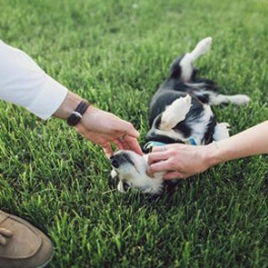
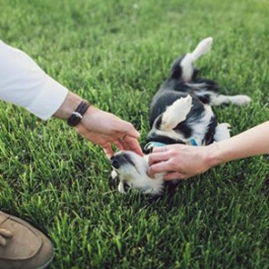

Свадебные тренды
2018
На днях мы с девочками перечитывали много интересной информации, смотрели свадебные блоги и решили вывести своих 8 тенденций, которые, как нам показалось, будут являться трендами 2016 года
1. Оригинальные места проведения
Итак, первым делом стоит обратить внимание на новые и яркие места для проведения свадеб.
Если ты смелая и тебе хочется нечто оригинальное – это все для тебя. Например, архитектурные здания, музеи, заводы, чердаки, фермы, винодельни, террасы. А еще крыши или летние театры с живописными террасами.
Помещения в стиле лофт тоже не отстают и превращаются в очень даже свадебные!
Кстати, как вариант можно рассмотреть Арт – завод Платформа. Где-где, а там уж точно твоя фантазия может разгуляться, а наша - легко трансформирует эту площадку в место твоей мечты.
2. Свадебная палитра
Pantone стал законодателем модных цветов. И, как ты наверняка уже заметила, потому что кричат об этом все, самые популярные цвета этого года: розовый кварц, голубое спокойствие, синяя волна, желтая ромашка, перламутровая ракушка, серая лаванда, зеленая вспышка, ледяной кофе и охристая фиеста.
Но знаешь, мы абсолютно убеждены, что какой бы цвет ты не выбрала, он и будет самым модным и идеальным для твоей свадьбы.
3. Каллиграфия
Свадьба начинается с приглашения, а значит очень важно произвести впечатление на гостей уже на этом этапе. И в этом сезоне конверты и бумага вытеснили оригинальные открытки самых необычных форм.
Каллиграфия продолжает пребывать с нами и в новом сезоне и превращает обычное приглашение в произведение ручной работы.
Так что, если идеальность и индивидуальность – твой конек, этот тренд явно нужно соблюсти.
4. Домашние свадебные торты
Домашние торты и пироги стали хитом в 2017 году и плавно переходят в 2018. Торты, украшенные свежими ягодами или цветами, с фруктами или растениями смотрятся очень стильно и вкусно.
Так же в тренд входит торт-абсурд. Живые люстры, стразы и даже драгоценные камни – все это может стать главным элементом самого вкусного свадебного торта. Фантазии есть, где погулять. А люстру потом можно и дома повесить. Как говорится, все в семью ;
Ну, вот и собственно и все, чем мы сегодня хотели поделиться!
Но далеко не все, что мы бы хотели тебе предложить.
Так что давай так, просто набирай нам сейчас (093) 337-31-56 и мы договоримся о встрече.
А дальше уже создадим свои тренды, если эти не подойдут :)


 
